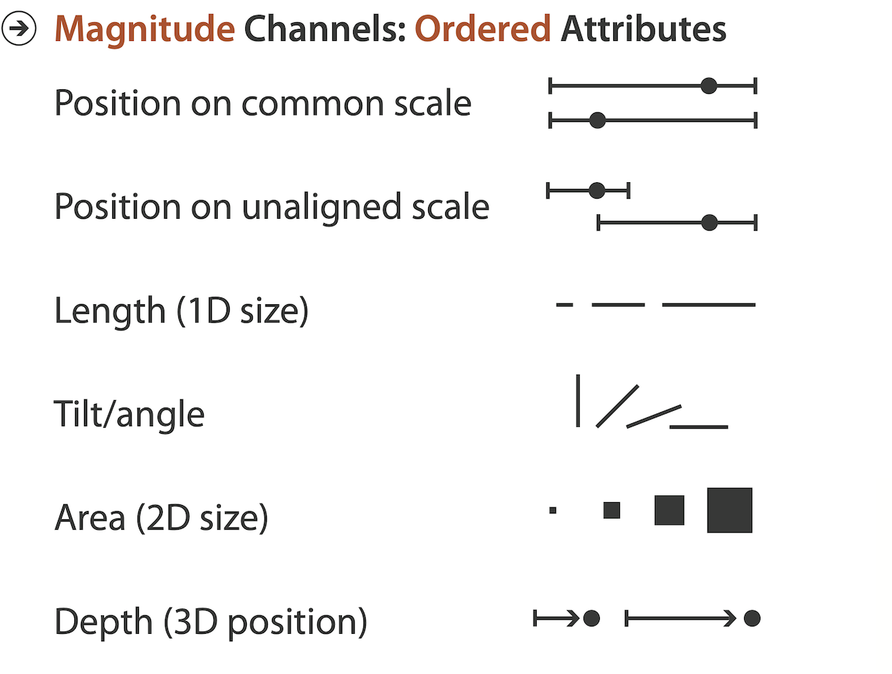

Rules of Thumb
MIDS W209: Information Visualization
John Alexis Guerra Gómez | john.guerra[at]gmail.com | @duto_guerra
https://johnguerra.co/lectures/MIDS_W209_Information_Visualization/05_Rules_of_thumb/
https://johnguerra.co/lectures/MIDS_W209_Information_Visualization/05_Rules_of_thumb/

Partially based on slides from Tamara Munzner
What we are going to learn
- No unjustified 3D or 2D
- Readable text
- Eyes beat memory
- Visualization Mantra
- Responsiveness is required
- Function first, form next
No unjustified 3D
Unjustified 3D everywhere
Power of the plane
Power of the plane 2
Danger of depth
We don’t really live in 3D 👉 we see in 2.05D
- acquire more info on image plane quickly from eye movements
- acquire more info for depth slower, from head/body motion
Occlusion hides information
- Interaction can resolve occlusion,
- But at cost of time and cognitive load
Perspective?
Perspective distortion loses information
- Interferes with all size channel encodings
- Power of the plane is lost!
Mukherjea, Hirata, and Hara. InfoVis 96]
3D vs 2D bar charts
- 🚫
3D bars🚫 - perspective distortion
- occlusion
- 2D faceting 👌🏻
Tilted text isn’t legible
- Tilted text 👉 poor legibility
- Further reading
:
[Exploring and Reducing the Effects of Orientation on Text Readability in Volumetric Displays. Grossman et al. CHI 2007]
Power demand of a research facility
Task: Identify/compare similar periods of time
Transform to new data abstraction
- Derived data: cluster hierarchy
- Juxtapose multiple views (calendar)
- Superimposed 2D curves (clusters)
When to use 3D
Shape Perception
- Benefits outweigh costs when target is shape

Good usage of 3D
Constrained navigation steps
through carefully designed viewpoints.
through carefully designed viewpoints.

When to use 3D
- Use 3D for true 3D spatial data 👍
- 3D needs very careful justification for abstract data
- enthusiasm in 1990s, but now skepticism
- be especially careful with 3D for point clouds or networks
No unjustified 2D
No unjustified 2D
- Consider whether network data requires 2D spatial layout
- especially if reading text is central to task!
- arranging as network means lower information density and harder label lookup compared to text lists
- benefits outweigh costs when topological structure/context important for task
- be especially careful for search results, document collections, ontologies

Do you really need a map?

- They use the position location
- Use them for geographical tasks
- Bad for comparison tasks
- Don't do a map just because you have geo data
Eyes beat memory
Eyes beat memory
- Principle: external cognition vs. internal memory
- easy to compare by moving eyes between side-by-side views
- harder to compare visible item to memory of what you saw
Eyes beat memory 2
- Implications for animation
- great for choreographed storytelling
- great for transitions between two states
- poor for many states with changes everywhere
- consider small multiples instead
Example: Cerebral
- Small multiples: one graph instance per experimental condition
- same spatial layout
- color differently, by condition
Why not animation?
- disparate frames and regions: comparison difficult
- vs contiguous frames
- vs small region
- vs coherent motion of group
- safe special case
- animated transitions
Change blindness
If attention is directed elsewhere, even drastic changes not noticeable
Resolution beats immersion
- Immersion typically not helpful for abstract data
- do not need sense of presence or stereoscopic 3D
- desktop also better for workflow integration
- Resolution much more important: pixels are the scarcest resource
- Virtual reality for abstract data difficult to justify thus far
- but stay tuned with second wave
Visualization Mantra
Visualization Mantra
- Overview first, zoom and filter, then details on demand.
- Overview first, zoom and filter, then details on demand.
- Overview first, zoom and filter, then details on demand.
- Overview first, zoom and filter, then details on demand.
- Overview first, zoom and filter, then details on demand.
- Overview first, zoom and filter, then details on demand.
- Overview first, zoom and filter, then details on demand.
- Overview first, zoom and filter, then details on demand.
- Overview first, zoom and filter, then details on demand.
- Overview first, zoom and filter, then details on demand.
[The Eyes Have It: A Task by Data Type Taxonomy for Information Visualizations. Shneiderman. Proc. IEEE Visual Languages, pp. 336–343, 1996.]
Overview
- Overview 👉 summary
- microcosm of full vis design problems
- Useful for exploration

Overview 👉 Zoom
Overview 👉 Filtering
Bottoms up?
- Sometimes makes sense to start small
- Useful for presentation
- Common in story telling
- Helps explaining complex concepts
Function first
form next
Avoid aesthetics example
Artery Viz
Evaluations of Artery Visualizations for Heart Disease Diagnosis
PaperSlides
What we learned
- No unjustified 3D or 2D
- Readable text
- Eyes beat memory
- Visualization Mantra
- Responsiveness is required
- Function first, form next